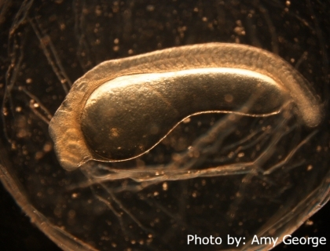

Developmental rate of embryos and larvae of bighead and silver carps

Developmental rate of the eggs and larvae is a key parameter to be incorporated in models that determine where Asian carps are capable of spawning, and also, when coupled with field collections of drifting eggs and larvae, can be used to determine spawning locations or where the larvae will leave the drift and move to nursery locations. These locations are required to inform control efforts based on spawning disruption or destruction of the carp in their nurseries. Previous published work had closely described the developmental stages, but had poor temperature control and thus was inadequate for this work. Also, because substantial genetic change has occurred since the introduction of Asian carps to North America, it was important that this work be done with North American fish for maximum reliability of the models.
USGS employees worked with Chinese scientists to acquire and translate existing Chinese science on development. Then, bighead and silver carps were spawned and the eggs and larvae reared in the laboratory, with close control on temperature and very close observation of the different developmental stages. Multiple spawning events of each species were necessary to understand variability in developmental rate. Preserved voucher specimens and microscope photography were taken of all developmental stages.
These data were first used to model the spawning locations of Asian carps in the Missouri River. They were later used in the development of the more advanced FluEgg model, which can be used to determine whether a river is at risk for reproduction by Asian carps. Various rivers have been modeled, with the determination that under some flow conditions much shorter rivers than previously believed would be adequate for Asian carp reproduction. The recent discovery that grass carp have successfully spawned in the Sandusky River in Ohio, a short tributary of Lake Erie, lends validity to these models.
A temperature model was developed that describes the relationship between developmental rate and temperature for each developmental stage.
A USGS Data Series report, Early development of four cyprinids native to the Yangtze River, China
A USGS Scientific Investigations Report, Developmental rate and behavior of early life stages of bighead and silver carp
A journal article in PLOS ONE, Aspects of embryonic and larval development in bighead carp Hypophthalmichthys nobilis and silver carp Hypophthalmichthys molitrix.
A journal article in Environmental Biology of Fishes, Location and timing of Asian carp spawning in the lower Missouri River..
Presented at 142nd Annual Meeting of the American Fisheries Society in St. Paul, MN, Use of drift models to understand Asian carp spawning and early life history..
Duane Chapman, dchapman@usgs.gov
Columbia Environmental Science Center
573-875-5399